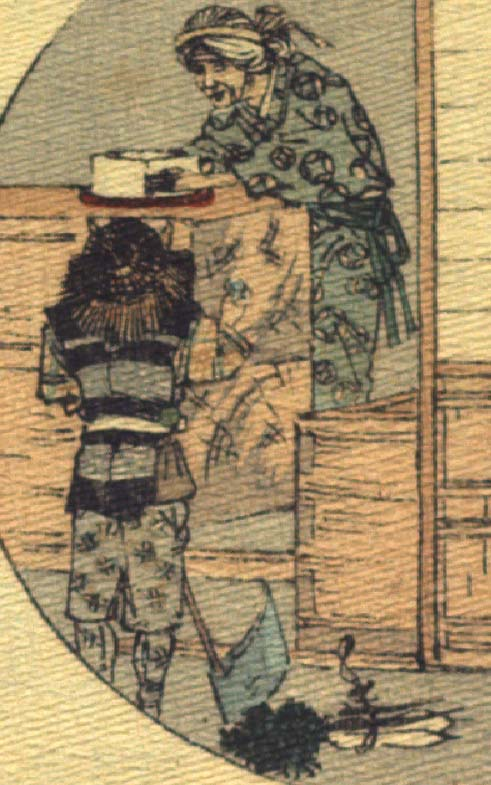

狐。着物と袖なし羽織、袴を着て、藁笠をかぶり、きこりのような扮装をしている。脇に斧を置き、その横の地面に大根とごぼうらしい野菜が置かれている。店の中にいる老婆から豆腐を買おうとしている。
著作者：J.Dautremer／出典：親書誌：U426_nichibunken_0120：La victoire du petit renard／日付：2006／資源識別子：U426_nichibunken_0120_0006_0000
Copyright (c)2010- International Research Center for Japanese Studies, Kyoto, Japan. All rights reserved.